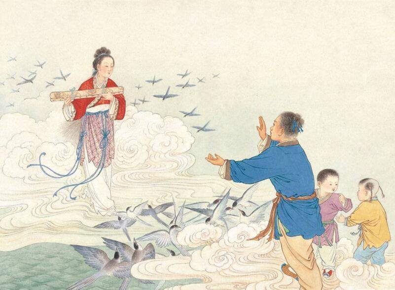
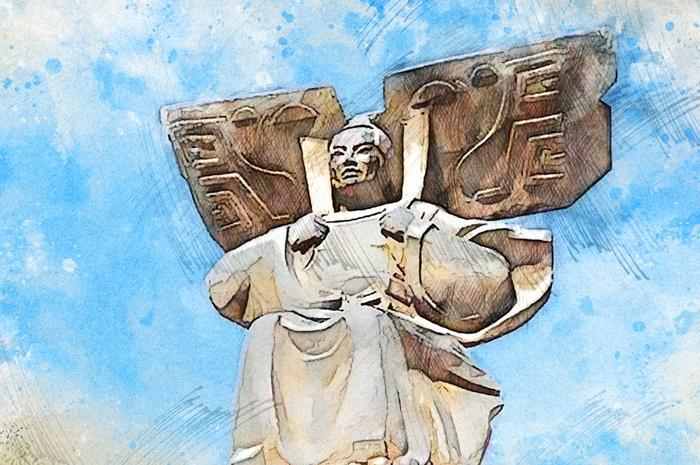
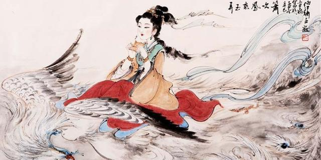
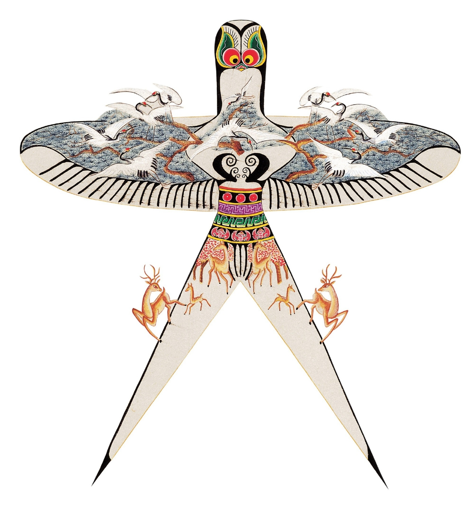
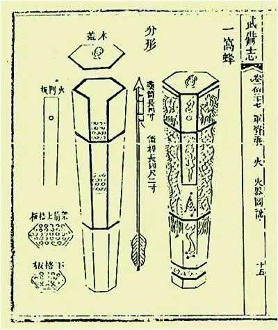
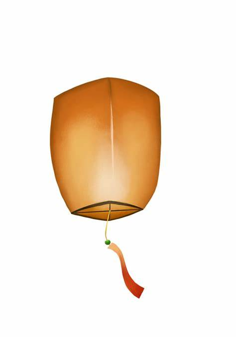
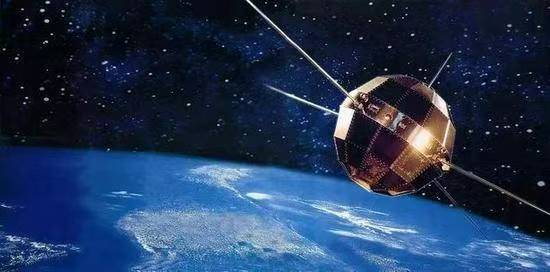
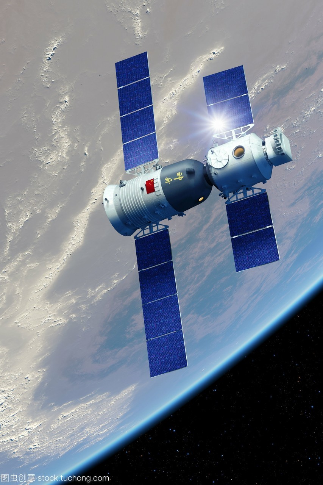
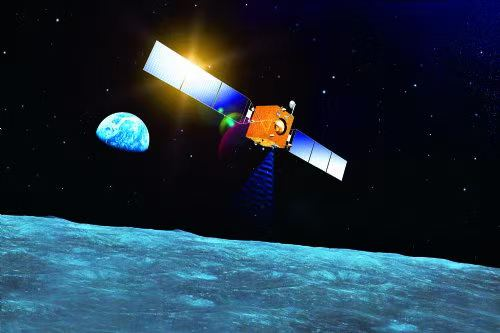
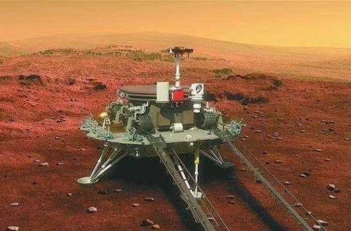

飞天寻梦
从古代神话到现代航天，中华民族对天空的不懈追求与探索
史书的见证
嫦娥奔月
“嫦娥奔月”的神话源自古人对星辰的崇拜，据现存文字记载最早出现于《淮南子》等古书
时期：古代神话
后羿射日

出自《山海经》，天上有十个太阳，后羿用弓射下九个。这个故事反映了古人对天空的崇拜。
时期：古代神话
女娲补天

记载于《淮南子》，女娲炼五色石修补苍天。这个创世神话展现了古人对天地结构的想象。
时期：古代神话
牛郎织女
最早见于《诗经》，讲述牛郎与织女被银河分隔，每年农历七月初七才能在鹊桥相会。
时期：古代神话
万户飞天
明朝初年，万户使用火箭尝试把自己发射到天上，试图借助火箭推力升空。
时期：14世纪末
敦煌飞天
在佛教初传不久的魏晋南北朝时，曾经把壁画中的飞仙亦称为飞天，飞天、飞仙不分。
时期：4-14世纪
列子御风
《列子·黄帝篇》记载，列子能"御风而行"，轻飘飘地在空中飞行十五天后返回。
时期：战国时期
萧史弄玉
汉代《列仙传》记载，秦穆公时萧史善吹箫，后与穆公女弄玉结为夫妻，最终乘龙凤升天而去成为神仙眷侣。
时期：春秋时期
风筝
春秋时期发明，最初称为"木鸢"或"纸鸢"。汉代用于军事通信，唐宋时期发展为娱乐工具，明代已有载人风筝的记载。
时期：公元前5世纪
火箭
宋代发明的火药武器，元代发展出多级火箭技术。明代《武备志》记载了"火龙出水"等多级火箭武器。
时期：12世纪
孔明灯
相传三国时期诸葛亮发明，利用热空气升空原理制作。最初用于军事信号传递，后成为民间节庆活动的重要元素。
时期：3世纪
鲁班木鸢
据《墨子·鲁问》记载，春秋时期鲁国工匠鲁班用竹木制作了一只大鸟(鸢)，能在空中飞行三日不落。
时期：公元前5世纪
东方红一号
中国第一颗人造地球卫星，于1970年4月24日发射成功，使中国成为继苏、美、法、日之后世界上第五个独立研制并发射人造地球卫星的国家。
时期：1970年
神舟五号
中国首次载人航天飞行任务，航天员杨利伟于2003年10月15日进入太空，使中国成为世界上第三个能够独立开展载人航天活动的国家。
时期：2003年
嫦娥探月
中国月球探测工程，已成功实现月球背面软着陆(嫦娥四号)和月球样品返回(嫦娥五号)，开启了中国人探索月球的新篇章。
时期：2007年至今
天问一号
中国首次火星探测任务，一次实现"绕、着、巡"三大目标，使中国成为第二个成功在火星表面着陆探测器的国家。
时期：2021年
(公元前3000年-公元前221年)
(公元前221年-14世纪)
(公元前5世纪-18世纪)
(1970年-至今)
中美俄航天数据对比分析
数据聚类分析
中美俄火箭发射数量聚类结果饼状图
1. 中国火箭发射成本聚类分析 中国的火箭发射成本呈现 两簇为主，一簇重复，低成本簇可能对应小型火箭或常规任务，高成本簇可能对应特殊任务或早期研发阶段的发射。
2. 美国火箭发射成本聚类分析 美国的发射成本呈现 跨度极大的三簇，尤其是高成本簇远高于其他两簇。 低成本簇可能代表成熟商业火箭，中等成本簇可能对应政府主导的常规任务，极高成本簇可能涉及高复杂度任务。
中美俄火箭发射数量聚类结果柱状图
3. 俄罗斯火箭发射成本聚类分析 俄罗斯的发射成本呈现 两簇为主、一簇重复，低成本簇可能对应小型火箭或成熟技术发射（联盟号）高成本簇可能对应中型火箭或特定任务。
4. 三国对比与总结 成本分布差异： 中国：成本分层，低、中成本簇占比可能较高，并且出现重复，反映规模化和技术成熟度。 美国：成本跨度大，极端值突出，体现商业创新与高端任务并存。 俄罗斯：成本集中在中等偏高区间，低成本簇较少，可能受发射场地的成本和发射模式影响。
赋予神话重归于视野
中国航天器的命名蕴含着深厚的文化底蕴，将古老神话与现代科技完美融合
嫦娥系列
源自"嫦娥奔月"神话，中国探月工程的代号
玉兔号
嫦娥的月宫伙伴，中国首辆月球车
鹊桥中继星
源自"鹊桥相会"传说，为嫦娥四号提供中继通信
天问系列
源自屈原长诗《天问》，中国行星探测计划
悟空号
源自《西游记》孙悟空，暗物质粒子探测卫星
祝融号
源自火神祝融，中国首辆火星车
中国航天精神
特别能吃苦
航天人常年奋战在戈壁荒漠、深山峡谷，克服恶劣环境，默默奉献青春。
特别能战斗
面对技术封锁和重重困难，航天人迎难而上，创造了多项世界第一。
特别能攻关
从"两弹一星"到载人航天，突破了一项项关键技术瓶颈。
特别能奉献
一代代航天人淡泊名利、甘为人梯，将个人理想融入国家事业。